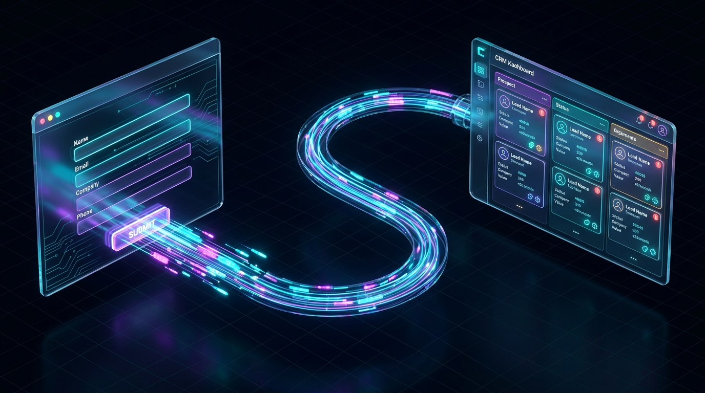

Imagine someone visits your website, explores your services, and fills out your contact form.
They are interested in your business. They want to know more about your services, discuss a project, or request a quote.
But after submitting the form, their information lands in your inbox.
You are busy with other work, so you plan to respond later. Another inquiry arrives, followed by a few more. Before you realize it, some potential customers have been waiting for hours, while others have been forgotten completely.
Sound familiar?
This is a common problem for growing businesses. Getting website visitors is important, but managing the inquiries those visitors generate is equally important.
The solution is to connect your website to a system that automatically collects, organizes, and tracks every inquiry.
This is where website-to-CRM automation comes in.
Instead of manually copying contact details, notifying your team, and remembering to follow up, you can create a system that handles these repetitive tasks for you.
At Digital Cron, we believe a business website should do more than look professional. It should help your business attract potential customers and make it easier to turn those inquiries into real business opportunities.
In this guide, we will explain how to automate website leads from form submission to CRM, why it matters, and how your business can get started without making the process unnecessarily complicated.
Let's start with a simple example.
Suppose you own a web design agency. A potential customer visits your website and fills out a form asking for a new website. Normally, you might need to:
Now imagine a system that handles these tasks automatically.
As soon as someone submits your form, their information is saved in your customer database. Your team receives a notification, the customer gets a confirmation email, and a reminder is created so the inquiry doesn't get forgotten.
You no longer need to manage every step manually. That is website lead automation.
CRM stands for Customer Relationship Management. Think of a CRM as a digital notebook for your business relationships.
Instead of keeping customer information scattered across emails, spreadsheets, and messaging applications, a CRM helps you organize everything in one place.
You can see:
A CRM makes it easier to manage potential customers without relying on memory or searching through old messages. When you connect your website to your CRM, new inquiries can be added automatically.
Your website collects the inquiry, your CRM organizes it, and automation takes care of the next steps.
Many business owners assume that if their website has a contact form, their lead management process is complete. Unfortunately, collecting an inquiry is only the first step.
Here are four common problems that happen when everything is handled manually:
A potential customer submits your contact form while comparing several service providers. If you respond the next day, they may already be talking to someone else. An automated confirmation can acknowledge their inquiry immediately and explain when they can expect a response, while your team focuses on a thoughtful reply.
Sometimes a potential customer doesn't respond to your first email. That doesn't always mean they aren't interested. They may be busy, considering their options, or waiting for the right time. Without reminders, it is easy to forget about these opportunities.
One lead is in your email inbox. Another is in a spreadsheet. Someone else on your team has the details saved in a messaging application. When information is scattered, it becomes difficult to understand which leads need attention. A CRM brings those records together so your team works from a shared source of truth.
Copying names, entering email addresses, sending confirmations, and creating reminders are necessary tasks, but they don't require human judgment. Automation handles this routine work, freeing up your time to speak with customers, prepare proposals, and grow your business.
The goal isn't to remove people from your business. It is to remove unnecessary manual work from their day.
You don't need to understand programming to understand how this process works. Let's follow a potential customer through a simple 5-step journey:
A person shares their name, email address, and what they need help with.
Their details appear in your CRM instead of waiting for someone to enter them manually.
The right person knows that a new inquiry has arrived and can respond promptly.
A short, friendly email confirms that their inquiry has been safely received.
A reminder, consultation, or follow-up task is created so the opportunity never disappears.
All of this can happen with little or no manual intervention once the system is properly configured. Your team still makes the important decisions, answers complex questions, and builds customer relationships. The system simply makes sure the routine steps happen consistently.
You don't need an expensive collection of software to automate website leads. Most businesses can start with three basic components:
Your website needs a way for potential customers to contact you. Collect enough information to understand the inquiry without making it difficult to complete (e.g. Name, Email, Service required, and a brief project description).
Keeps customer information in one place so you can see which inquiries are new, which proposals are pending, and which opportunities have turned into clients.
Connects your website form to your CRM and tells the system what to do when someone submits an inquiry (save details, notify the sales team, send confirmation).
The specific software you choose matters less than whether the system reliably solves your business problem.
Let's say you run a digital marketing agency that receives 30 website inquiries every month.
Before automation, your process looks like checking your inbox, manually copying details into spreadsheets, forwarding inquiries, and trying to remember which prospects need follow-up.
Here is what changes once you connect your website form to a CRM:
| Before Automation | After Automation |
|---|---|
| Manually check and organize inquiries | Leads are recorded automatically |
| Copy contact details into a spreadsheet | Customer information is stored in the CRM |
| Forward emails to team members | New leads trigger the appropriate notification |
| Remember follow-ups yourself | Follow-up tasks and reminders are created |
| Search through old emails for context | Review the inquiry history in one place |
The biggest benefit isn't simply that a few tasks disappear from your to-do list. It is that every inquiry has a clear next step. You know who contacted you, what they need, and who is responsible for responding.
Basic automation follows instructions you define in advance (e.g. form submission triggers CRM entry and notification). AI adds another layer by helping your business understand the inquiry and prepare a more relevant response.
Here are three practical examples:
Imagine your website receives inquiries about website development, AI automation, and digital marketing. Instead of categorizing every inquiry manually, AI reads the customer's message and suggests the relevant service category so the system directs the inquiry to the right person.
Some prospects write detailed paragraphs about their business challenges. AI can summarize the key points—requested service, core problem, and expected next action—so your team understands the requirements at a glance.
Instead of sending generic autoresponders, AI can draft a contextual reply based on the actual inquiry. For example, a redesign lead receives thoughts on site architecture, while an automation lead receives points on repetitive workflows.
The best approach is to use automation for repetitive tasks and AI where understanding and personalization add real value.
Long forms discourage inquiries. Ask for what you need to respond appropriately, and collect more details later.
Avoid "Dear Valued Customer". Use natural language, reference the requested service, and set clear expectations.
Ensure your system recognizes existing contacts and updates them instead of creating messy duplicate records.
If a prospect books a meeting or replies, stop the automated follow-up immediately.
Integrations can break. Test the entire flow regularly and include error alerts or backup email logging.
Start with one clear problem, solve it reliably, and expand only when there is demonstrable benefit.
If your business is new to automation, you don't need a complicated plan. Start with these five steps:
Find out where website inquiries go today and how your team handles them.
Are leads being missed? Are responses too slow? Is your team wasting time entering data manually?
Make sure new inquiries are recorded correctly and essential details reach your database.
Start with an internal notification and a customer acknowledgment before adding complex sequences.
Submit test submissions, confirm notifications, and monitor real conversion rates.
Your website should make it easier for potential customers to do business with you, not create another administrative task for your team.
At Digital Cron, we bring together website development and AI automation to help businesses create more connected, efficient workflows:
We don't believe every business needs a complicated AI system. The right solution starts with understanding how your business currently works, identifying bottlenecks, and building a practical system around those needs.
Imagine every website inquiry being organized, the right person being notified, and the next step being clearly tracked.
Less time spent on repetitive administration. Fewer forgotten inquiries. More time to focus on the customers who need your attention.
Digital Cron can help you build a website and automation workflow that works for your business.
Get in touch with Digital Cron to discuss your current website, how you manage inquiries, and which parts of the process could benefit from automation.
Automating website leads from form submission to CRM doesn't have to be complicated.
Start by making sure every inquiry is captured, organized, and assigned to someone responsible for the next step. Then automate routine tasks such as confirmations, notifications, and follow-up reminders.
As your business grows, you can introduce AI to help organize inquiries and make communication more relevant. The most important thing is to build a system that solves a real problem rather than adding unnecessary software to your business.
When your website, CRM, and follow-up process work together, you spend less time managing information and more time building customer relationships.
Your website brings the opportunity. A well-designed automation system helps you make the most of it.